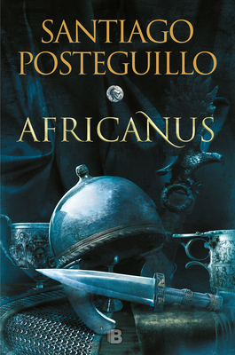

Africanus. El hijo del cónsul (Publio Cornelio Escipión, #1)
Reseña por Jorge I. Zuluaga

Ver reseña en GoodReads (necesita cuenta)
Imaginen seguir una serie por varios meses (incluso años). No en 10, 20 o 30 episodios de 45 minutos. Imagen hacerlo por cientos de horas. Imaginen conocer de cerca la vida de los personajes (y no caricaturas breves en una película, incluso en una serie larga). Sufrir con ellos intensamente. Sorprenderse con un desenlace inesperado. Y todo mientras aprendes de historia.
¡Historia! ¡hágame el favor!
Yo sé que muchos dirán que novela histórica y grandes épicas con una base histórica se han escrito desde Homero, incluso desde el tiempo de los patriarcas Judíos. Pero les aseguro que estamos ante una forma de novela histórica diferente. La obra de Posteguillo combina la erudición, la precisión histórica, la descripción exhaustiva y lo mejor del entretenimiento.
Inicie esta trilogía, la primera que escribió Posteguillo sobre Roma, después de leer todos sus otros libros anteriores (la bilogía de Julia primero y la espectacular trilogía de Trajano). La razón por haberlo hecho en el orden "incorrecto" fue la moda. A mi mano llego "Yo, Julia", dos años después de recibir el Premio Planeta en 2018 y quise probar un poco de novela histórica sobre Roma.
¡Quede "miserablemente" atrapado!
Ya voy para un año sin parar de leer a Posteguillo. Me volví un grupie. Conseguí los libros con esfuerzo en las mejores ediciones que pude y he sacado con placer tiempo para leer miles de entretenidas e informativas páginas.
Mi consejo: si van a comenzar a leer la ahora extensa, pero muy "fácil" de leer, obra literaria de Posteguillo sobre Roma, comiencen por favor con esta trilogía, la trilogía de Africanus.
Como deben saber quiénes pierden el tiempo leyendo mis reseñas, no me gusta describir el contenido del libro; lo hacen mucho mejor las personas que son contratadas para ello por las editoriales.
Pero es inevitable. Sobre todo para advertirles que no se creen expectativas con este primer volumen de la trilogía (como me las cree yo): Escipión no mata a Anibal en este primer volumen (no sé si lo hará en los otros, no les estoy "cantando" nada).
Algunos dirán "¡obvio!"; otros "¿quién es Escipión y quién es Anibal?" y un tercer grupo "¡me arruinaste la trilogía".
A los tres les servirá saber (no lo dice la descripción normalmente) que "El hijo del Consul" solo describe la primera parte de la vida (infancia y juventud) y de la carrera de Publio Cornelio Escipión (hijo), un exitoso líder militar romano del tercer siglo antes de nuestra era, y sobre todo, sus campañas en Hispania. Todo durante un importante período de la historia de occidente conocido como la segunda guerra púnica, durante la cual la historia estuvo a punto de cambiar.
Si les gustan las batallas de la antigüedad, gozaron con los enfrentamientos de ficción de series como Game of Thrones, esta es la trilogía.